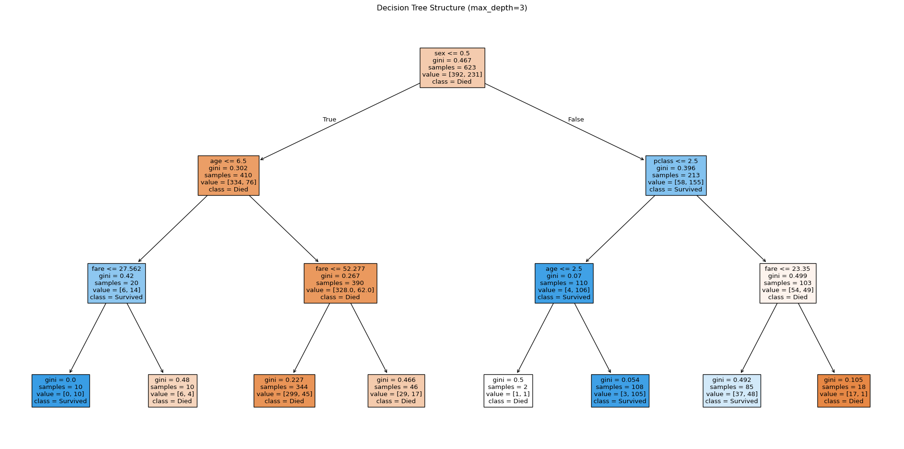
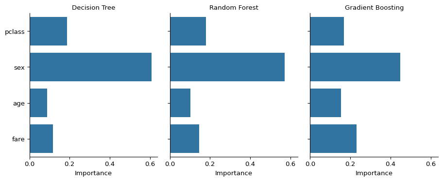
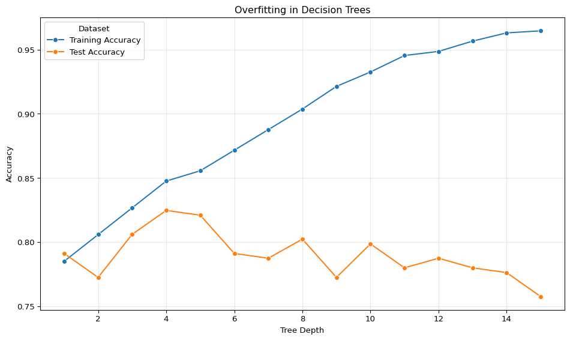

import numpy as np
import matplotlib.pyplot as plt
import pandas as pd
import seaborn as sns
from sklearn.model_selection import train_test_split
from sklearn.linear_model import LogisticRegression
from sklearn.tree import DecisionTreeClassifier, plot_tree
from sklearn.ensemble import RandomForestClassifier, GradientBoostingClassifier
from sklearn.metrics import accuracy_score
# set random seed for reproducibility
np.random.seed(42)Supervised Learning
This is the second session in our machine learning series. In the first session, we introduced machine learning conceptually and demonstrated a basic supervised learning workflow using logistic regression to predict survivors on the Titanic. This session builds on what was covered in the first session, exploring supervised learning in more detail, understanding the different approaches to supervising learning, and looking at some of the most common algorithms for supervised tasks.
The goal for this session is to build on the first session by gaining a stronger understanding of what supervised learning is and exploring common models used in supervised learning.
Slides
Use the left ⬅️ and right ➡️ arrow keys to navigate through the slides below. To view in a separate tab/window, follow this link.
What is Supervised Learning?
Supervised learning is a type of machine learning where a model is trained on data where the outcome is already known, in order to predict outcomes on new data where the outcome isn’t known. You provide features (input variables) and a target (the outcome to predict), and the model learns the relationship between them. This differs from unsupervised learning, where no target exists and the goal is finding patterns or groupings, and from reinforcement learning, where the model learns through trial and error.
The fundamental structure of supervised learning involves features and targets. Features are the input variables that describe each observation: patient age, diagnosis codes, medication count, previous admissions. The target is what you want to predict: whether the patient will be readmitted, how long they’ll stay, which treatment will work best. Features can be numerical (age, test results) or categorical (diagnosis, sex), and most algorithms handle both types.
There are two different kinds of supervised learning task, based on the target type:
- Classification - Predicting categories (often binary outcomes).
- Will this patient be readmitted? Yes/No
- Which diagnosis applies? A/B/C/D
- Is this scan normal or abnormal? Yes/No
- Regression - Predicting continuous numbers.
- How many days will the patient stay in hospital?
- What will next month’s A&E attendances be?
- What is a patient’s predicted blood pressure?
The central challenge in supervised learning is generalisation. Models must learn patterns that work on new data, not just memorise the training set. Underfitting occurs when the model is too simple and misses important patterns, performing poorly on both training and test data. Overfitting occurs when the model is too complex and learns noise in the training data, performing well on training data but poorly on test data. Finding the right complexity level is fundamental to building useful models.
Understanding How Models Learn
Understanding what happens during training transforms machine learning from magic into a tool you can control and apply effectively.
Different algorithms approach learning in fundamentally different ways. Logistic regression finds linear boundaries that separate classes. Decision trees ask sequential yes/no questions. Random forests combine many trees to get more stable predictions. Gradient boosting builds trees that learn from previous mistakes. Each approach has strengths and weaknesses that make it better suited to different types of problems.
This matters in practice because there is no single best algorithm. This is known as the No Free Lunch Theorem. The model that works best depends on your data structure, how much data you have, and what types of patterns exist in your features. Sometimes it might even be better to pick an algorithm that performs worse because it is more computationally efficient or because it is easier to interpet/explain its outputs.
Comparing Multiple Models
We’ll train four different models on the Titanic dataset and compare their performance. This demonstrates how different algorithms learn different patterns from the same data.
Setup
Data Preparation
We will use the same data preparation steps as used in the first session.
# load titanic data
df = sns.load_dataset('titanic')
# select features and target
X = df[['pclass', 'sex', 'age', 'fare']]
y = df['survived']
# split into train and test sets
X_train, X_test, y_train, y_test = train_test_split(
X, y, test_size=0.3, random_state=42
)
# prepare features
def prepare_features(data):
data = data.copy()
data['age'] = data['age'].fillna(data['age'].median())
data['sex'] = (data['sex'] == 'female').astype(int)
return data
X_train = prepare_features(X_train)
X_test = prepare_features(X_test)Logistic Regression
Logistic regression works well when the relationship between features and outcomes is approximately linear, and it produces interpretable coefficients that show how each feature influences predictions.
# train logistic regression
log_model = LogisticRegression(max_iter=1000, random_state=42)
log_model.fit(X_train, y_train)
# evaluate on test set
log_pred = log_model.predict(X_test)
log_accuracy = accuracy_score(y_test, log_pred)
print(f"Logistic Regression Accuracy: {log_accuracy:.1%}")Logistic Regression Accuracy: 79.5%Decision Trees
Decision trees learn by recursively splitting the data based on feature values. At each node, the tree asks a yes/no question about a feature and splits passengers into two groups. The algorithm chooses splits that best separate survivors from non-survivors, measured by metrics like Gini impurity1.
The tree continues splitting until it reaches one of the following stopping criteria:
- All passengers in a node have the same outcome
- The node contains too few passengers to split further
- The tree reaches its maximum depth
# train decision tree
tree_model = DecisionTreeClassifier(max_depth=3, random_state=42)
tree_model.fit(X_train, y_train)
# evaluate on test set
tree_pred = tree_model.predict(X_test)
tree_accuracy = accuracy_score(y_test, tree_pred)
print(f"Decision Tree Accuracy: {tree_accuracy:.1%}")Decision Tree Accuracy: 80.6%We can visualise the tree structure to see exactly what rules it learned.
plt.figure(figsize=(20, 10))
plot_tree(
tree_model,
feature_names=X_train.columns,
class_names=['Died', 'Survived'],
filled=True,
fontsize=10
)
plt.title("Decision Tree Structure (max_depth=3)")
plt.tight_layout()
plt.show()
Each box contains the splitting rule, the Gini impurity, the number of samples, and the predicted class. Following any path from root to leaf gives you the sequence of decisions that lead to a prediction.
Decision trees are powerful because they are clear and simple. However, they tend to overfit the training data by learning overly specific rules that don’t generalise well.
Random Forests
Random forests address the overfitting problem with decision trees by training many trees and combining their predictions. Each tree in the forest is trained on a random subset of the training data (called a bootstrap sample), and at each split, only a random subset of features is considered. This randomness ensures each tree learns slightly different patterns.
When making predictions, each tree votes for a class, and the forest returns the majority vote. Because individual trees make different mistakes, averaging across trees produces more reliable predictions that generalise better to new data.
# train random forest
rf_model = RandomForestClassifier(
n_estimators=100, # number of trees
max_depth=3, # keep trees shallow to match single tree
random_state=42
)
rf_model.fit(X_train, y_train)
# evaluate on test set
rf_pred = rf_model.predict(X_test)
rf_accuracy = accuracy_score(y_test, rf_pred)
print(f"Random Forest Accuracy: {rf_accuracy:.1%}")Random Forest Accuracy: 78.7%Random forests typically outperform single decision trees because the ensemble smooths out individual tree errors. The trade-off is reduced interpretability. You can’t easily visualise 100 trees or explain a prediction as a single decision path.
Gradient Boosting
Gradient boosting takes a different approach to combining trees. Instead of training trees independently and averaging, it trains them sequentially. This is an ensembling method called boosting. Each new tree focuses on the mistakes made by previous trees, gradually improving the model’s performance.
The process works as follows:
- Train the first tree on the original data
- Identify where it makes prediction errors
- Ttrain the second tree to correct those errors
- Repeat
Each tree contributes to the final prediction, with later trees typically having more influence because they’ve learned from more mistakes.
# train gradient boosting model
gb_model = GradientBoostingClassifier(
n_estimators=100,
max_depth=3,
learning_rate=0.1, # how much each tree contributes
random_state=42
)
gb_model.fit(X_train, y_train)
# evaluate on test set
gb_pred = gb_model.predict(X_test)
gb_accuracy = accuracy_score(y_test, gb_pred)
print(f"Gradient Boosting Accuracy: {gb_accuracy:.1%}")Gradient Boosting Accuracy: 81.7%Gradient boosting often outperforms other algorithms, particularly on tabular data. There are lots of different gradient boosting algorithms, the most popular of which are XGBoost, LightGBM, and CatBoost. The sequential learning process allows it to capture complex patterns that other models miss. Like random forests, the trade-off is reduced interpretability compared to single trees.
Comparing Model Performance
Different models learned different patterns from the same training data. Comparing their test set performance shows which patterns generalised best to unseen data.
# create comparison dataframe
comparison = pd.DataFrame({
'Model': ['Logistic Regression', 'Decision Tree', 'Random Forest', 'Gradient Boosting'],
'Accuracy': [log_accuracy, tree_accuracy, rf_accuracy, gb_accuracy]
})
# sort by accuracy
comparison = comparison.sort_values('Accuracy', ascending=False).reset_index(drop=True)
print(comparison.to_string(index=False)) Model Accuracy
Gradient Boosting 0.817164
Decision Tree 0.805970
Logistic Regression 0.794776
Random Forest 0.787313# create dataframe for plotting
feature_names = X_train.columns
importance_data = pd.DataFrame({
'Feature': list(feature_names) * 3,
'Importance': list(tree_model.feature_importances_) +
list(rf_model.feature_importances_) +
list(gb_model.feature_importances_),
'Model': ['Decision Tree'] * len(feature_names) +
['Random Forest'] * len(feature_names) +
['Gradient Boosting'] * len(feature_names)
})
# create faceted plot
g = sns.FacetGrid(importance_data, col='Model', height=4, aspect=0.8)
g.map_dataframe(sns.barplot, y='Feature', x='Importance', order=feature_names)
g.set_axis_labels('Importance', '')
g.set_titles(col_template='{col_name}')
plt.tight_layout()
plt.show()
Overfitting and Model Complexity
Model complexity is controlled through hyperparameters. For decision trees, the most important hyperparameter is max_depth, which limits how many sequential questions the tree can ask. Shallow trees underfit by not learning enough patterns. Deep trees overfit by learning noise in the training data.
# test different tree depths
depths = range(1, 16)
train_scores = []
test_scores = []
for depth in depths:
tree = DecisionTreeClassifier(max_depth=depth, random_state=42)
tree.fit(X_train, y_train)
train_scores.append(accuracy_score(y_train, tree.predict(X_train)))
test_scores.append(accuracy_score(y_test, tree.predict(X_test)))
# create dataframe for plotting
overfitting_data = pd.DataFrame({
'Tree Depth': list(depths) * 2,
'Accuracy': train_scores + test_scores,
'Dataset': ['Training Accuracy'] * len(depths) + ['Test Accuracy'] * len(depths)
})
# plot results
plt.figure(figsize=(10, 6))
sns.lineplot(data=overfitting_data, x='Tree Depth', y='Accuracy', hue='Dataset',
marker='o', markersize=6)
plt.title('Overfitting in Decision Trees')
plt.grid(True, alpha=0.3)
plt.tight_layout()
plt.show()
Summary
Different algorithms approach learning differently: logistic regression finds linear boundaries, decision trees ask sequential questions, random forests combine many trees through voting, and gradient boosting trains trees that learn from previous mistakes.
No algorithm works best in all situations. Simpler models like logistic regression and shallow decision trees are more interpretable but may miss complex patterns. Ensemble methods like random forests and gradient boosting often achieve better performance but sacrifice interpretability. The right choice depends on your data, your constraints, and whether you need to explain predictions to stakeholders.
Footnotes
Gini impurity measures how mixed the classes are in a node. A pure node (all survivors or all deaths) has Gini = 0. A 50/50 split has Gini = 0.5. The algorithm chooses splits that minimise Gini impurity.↩︎